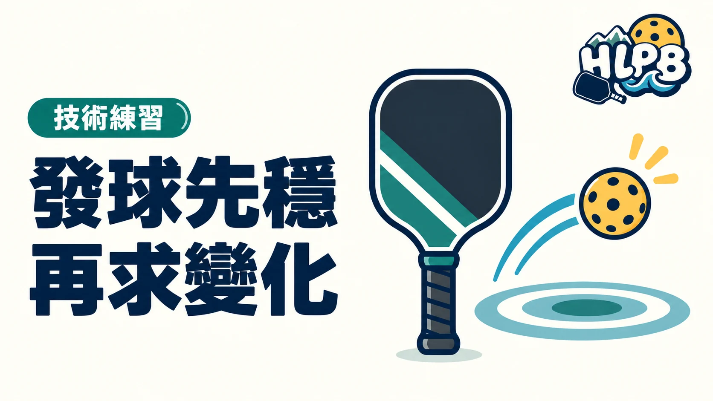

從站位、斜對角落點與合法動作開始，建立能重複完成的匹克球發球。
發球是每個回合的開始。新手先把球合法地送進正確發球區，比一開始追求速度、擦邊或旋轉更實用。發球穩定之後，再練落點和深度，才比較清楚自己到底改了什麼。
合法發球的站位與動作
擊球時至少一腳須在底線後的地面上，雙腳不能碰底線或場內，也不能超出中線與邊線的延長範圍。球要落在斜對角發球區；發球碰到非截擊區線算失誤。
站位、斜對角落點與穩定性
| 重點 | 注意什麼 |
|---|---|
| 先檢查腳 | 擊球瞬間的腳位才是重點，不能只看開始站在哪裡。 |
| 分清兩種發球 | 凌空發球須向上揮拍，擊球時球不得高於腰部、拍頭最高點不得高於手腕；落地發球有不同規定。 |
| 先練發進 | 保留落點空間，再練深度與速度，不要一開始就瞄準邊線。 |
發完先留意接發球的落地：發球方必須等接發球落地後才能擊球。
常見問題
落地發球也要遵守所有凌空發球動作限制嗎？
兩者規定不同。落地發球不能用力把球往上拋或向下推，腳位與斜對角落點規定仍適用。
發球越深越好嗎？
深度能增加壓力，但前提是合法且能穩定發進；不必為了靠近底線犧牲成功率。
跟著影片看動作
從零開始學匹克球：握拍、發球與接發球
早安健康／林永勝教練 · 台灣中文
發球從 3:44 看，接發球從 6:51 看。時間依原頻道章節標示。
教材來源 ↗ · 英文影片可查看字幕設定，是否有中文字幕依原頻道提供為準。影片動作是教學參考，規則仍以現行規則書與賽事章程為準。
參考來源
資料核對：2026/10/11。這是技術入門整理；動作細節可依教練指導調整。
HLPB 編輯整理｜最後查證：2026-10-12